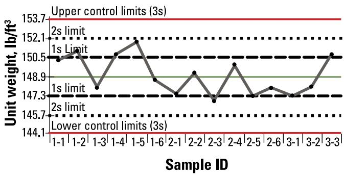
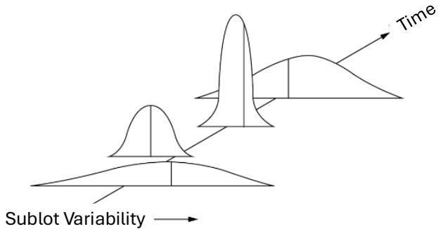
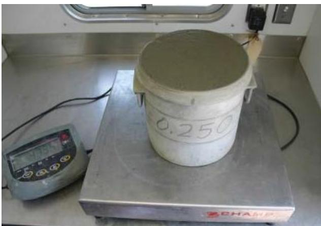
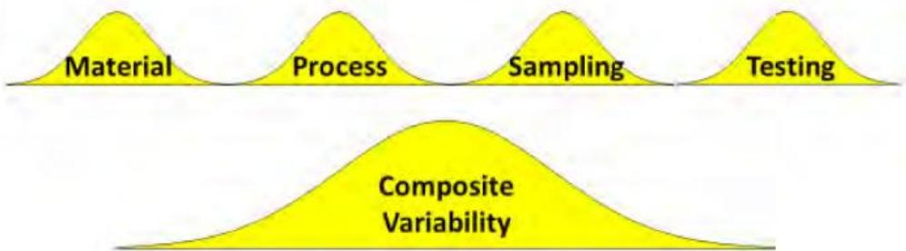

Quality Control
Quality control is the systematic practice of verifying that a product or process conforms to defined specifications by using inspection, testing and statistical evaluation methods [1]. In concrete production, this involves a comprehensive program that ensures every batch meets predefined performance and safety requirements despite the inherent variability of raw materials and environmental conditions [2]. The process relies on establishing clear specifications early, conducting representative sampling to infer properties of the whole population, and continuously monitoring key parameters such as moisture content, temperature, and workability during production [1] [2]. Statistical tools are employed to distinguish between random variation and assignable causes of deviation, triggering corrective actions when results fall outside established tolerance limits [1]. Ultimately, quality control translates laboratory design expectations into reliable field performance by integrating preparatory planning, ongoing oversight, and final acceptance testing to ensure uniformity and durability [1] [2].
Quality Control in airport pavements relies on a systematic approach to verify that materials and construction methods meet rigorous standards for durability and safety. Mixture Design establishes the foundation by selecting material proportions to meet specific performance requirements, while Mixture Management ensures uniformity during production by controlling blends so each batch satisfies predetermined specifications. Concrete Sampling provides the physical evidence needed to confirm that produced concrete meets these criteria, and Concrete Strength serves as the primary metric for verifying compliance with safety standards. Pavement Assessment completes the cycle by evaluating condition and performance metrics such as strength, thickness, and smoothness to verify overall uniformity.
Sources (2)
Sub-concepts (5)
Key findings
- Identified inherent variability in raw materials and mixing conditions as the central challenge to pavement concrete performance, establishing batch-to-batch uniformity as the decisive factor for durability [2].
- Demonstrated that mass-based batching significantly reduces errors associated with aggregate bulking compared to volume-based dosing methods [2].
- Observed that frequent adjustments of mixture composition between batches dramatically increase the risk of poor finishes, reduced strength, cracking, and durability failures [2].
- Established quality control as a system-wide discipline requiring long-lead aggregate sampling and accredited mixture designs to prevent schedule overruns and non-conforming mixes [1].
- Defined a coordinated four-phase framework—material submittals, laboratory proportioning, trial batching with control-strip calibration, and continuous on-site monitoring—to align design intent with field realities [1].
- Enforced statistical process control by treating assignable-cause variation as an out-of-control condition requiring immediate halt and correction, while accepting only chance-cause variation [1].
- Revealed a trade-off between production flexibility and strict specification compliance, where changes in material source trigger mandatory new design studies rather than simple adjustments [1].
- Linked contractor payment to the lowest-performing characteristic based on statistically derived percent-within-limits indices, reinforcing financial incentives for consistent multi-dimensional quality control [1].
Statistical Process Control and Material Uniformity Management
Evidence: 2 reports (2 primary)
Statistical process control in concrete production relies on distinguishing between inherent random variation and assignable causes of deviation to maintain material uniformity across batches [1]. Effective management requires continuous monitoring of key parameters such as moisture content, temperature, and mix proportions through mass-based batching rather than volume measurements to minimize error [2]. Control charts and acceptance sampling metrics are employed to quantify process stability and trigger corrective actions when performance falls outside predefined tolerance limits [1].
The following figure illustrates a sample control chart used to monitor concrete unit weight.

Sample control chart: concrete unit weight [2]The figure displays a statistical process control chart tracking the unit weight of concrete samples over time, featuring horizontal lines that represent one and two standard deviations from the mean as well as upper and lower three-sigma control limits.
Research problem — The inability to guarantee consistent concrete uniformity amidst fluctuating raw material properties and plant conditions creates a critical gap in maintaining pavement performance, as batch-to-batch variability leads to premature distress and compromised durability [2]. Achieving the target air-void system remains a persistent challenge due to the complex interplay of numerous variables affecting the air content, which directly impacts workability and compliance with specifications [2]. The absence of a disciplined, cross-disciplinary statistical control framework allows production processes to drift outside required tolerances, resulting in costly rework, disputes, and jeopardized runway safety [1].
The following figure illustrates how even an in-control process can exhibit variation due to assignable causes.

Variation observed in sublots sampled from an in-control process experiencing assignable cause variability. [1]The figure displays a sequence of three bell-shaped curves arranged along axes labeled “Sublot Variability” and “Time,” illustrating how the distribution of measurements changes over time. The first curve is wide with a low peak, while subsequent curves show significant shifts in both location (mean) and shape (standard deviation), visually representing “unacceptably different means and standard deviations” caused by assignable cause variability. This visualization demonstrates the statistical concept of a process becoming out of control due to excessive, undesirable variability in quality measurements.
State of the art — The current state of the art in quality control prioritizes batch-to-batch uniformity by treating the plant as a critical linchpin, utilizing continuous monitoring and real-time feedback loops to adjust variables such as air-void content and water-cement ratios within specification limits [2]. Statistical acceptance frameworks, such as the FAA Percent Within Limits methodology, serve as the cornerstone of modern regimes by evaluating lots as statistical units to distinguish natural variation from process drift through control-chart analysis and predefined tolerance limits [1]. Industry consensus has shifted toward holistic, data-driven programs that integrate rigorous mix-design accreditation, trial-batch validation, and continuous field monitoring to align technical performance with contractual incentives for reduced variability [1] [2].
The figure below illustrates how contractor risk is quantified within this framework by analyzing strength test results.
 Contractor’s risk in FAA’s PWL acceptance approach, using strength test results as an example (Johnson 2019). [1]
Contractor’s risk in FAA’s PWL acceptance approach, using strength test results as an example (Johnson 2019). [1]
The figure displays a bell-shaped curve representing the variation in quality of material within a lot. An arrow indicates that there is a probability samples will be taken from the area below this limit, illustrating the risk of rejecting acceptable material when lot quality is at the AQL.
Findings from the reports
- Identified inherent variability in raw materials and mixing conditions as the central challenge to pavement concrete quality, establishing batch-to-batch uniformity as the decisive factor for performance [2].
- Demonstrated that mass-based batching significantly reduces errors associated with aggregate bulking compared to volume-based dosing methods [2].
- Observed that frequent adjustments of mixture composition between batches dramatically increase the risk of poor finishes, reduced strength, cracking, and durability failures [2].
- Distinguished between stable processes driven by chance-cause variation and out-of-control conditions signaled by assignable causes in statistical process control analysis [1].
- Revealed that aggregate variability during paving operations frequently shifts coarseness and workability factors, necessitating daily sieve analyses and production stoppages when limits are exceeded [1].
- Showed that standard ASTM C136 testing lags often mask emerging out-of-control conditions because measured aggregate properties frequently exceed tighter recommended action limits [1].
- Established that contractor payment factors are determined by the lowest-performing characteristic among strength, thickness, and smoothness, creating financial incentives for multi-dimensional consistency [1].
- Defined quality control as a system-wide discipline requiring long-lead aggregate sampling, accredited mixture designs, and coordinated phases from material submittal through continuous on-site monitoring [1].
- Highlighted the trade-off between production flexibility and strict specification compliance when changes in material source trigger mandatory new design studies [1].
Novelty & rigor — The research introduces an integrated, stage-wide monitoring system that couples texture timing decisions to observable bleed-water behavior and augments aggregate-gradation surveillance with rapid statistical control tools [1]. It establishes a dedicated control-chart framework for aggregate factors with explicit action limits tighter than current industry tolerances, utilizing fast-track moisture-corrected sieve analysis to provide near-real-time detection of gradation drift [1]. The approach embeds a software-driven acceptance engine that automatically applies statistical percent-within-limits metrics to translate uniformity into contractual financial incentives, creating a dynamic regime that transcends static specification-only approaches [1].
The figure below illustrates how these statistical control limits are applied to production data within the CF and WF parallelogram framework.
 CF and WF parallelogram showing the allowable limits box adjusted to tolerance limits with production paving data. [1]
CF and WF parallelogram showing the allowable limits box adjusted to tolerance limits with production paving data. [1]
The figure displays a scatter plot of Workability Factor versus Coarseness Factor, bounded by red lines that define an action limit envelope for concrete mixture design.
Reported values
| Parameter | Value | Context | Source |
|---|---|---|---|
| aggregate planning lead time | 120 days | planning for acquisition of aggregates, sampling stockpiles, testing, approval, and performing the study | [1] |
| beam specimen transport time limit | 4 hours | FAA P-501 limitation on transportation time for beam specimens | [1] |
| Coarseness Factor action limit | ±3.5 | FAA | [1] |
| Coarseness Factor action limit | ±5 | UFGS Table 18 | [1] |
| Coarseness Factor change | ±5 | during a paving day (Air Force 1996) | [1] |
| Coarseness Factor limit | ±2.5 | TSPWG reference | [1] |
| coarseness factor variability | ±5 | expected change during a paving day identified by Air Force research in 1996 | [1] |
| curing compound application rate (FAA) | 1 gallon per 150 square feet gallon/150 sq ft | FAA requirement for curing compound volume | [1] |
| curing duration for intermediate lanes (DOD) | 7 days | DOD’s UFGS paving intermediate lanes after curing | [1] |
| curing duration for surrounding lanes | 7 days | FAA requirement for curing surrounding lanes before loading | [1] |
| Deviation above tolerance | 7% | Lot B measurements | [1] |
| elevation deviation | 3/8 in | Lot A surveyed elevation points from plan grade | [1] |
| Flexural strength PWL | 100% | Lot A test results | [1] |
| air content | 5 percent% | cold climates behind the paver | [2] |
| water-cement ratio | 0.38 to 0.42 | pavements in cold climates | [2] |
18 more distinct values omitted here; the full span-verified set is in the quantities sidecar.
Across the reviewed reports, statistical process control is established as a system-wide discipline that requires distinguishing between acceptable chance-cause variation and assignable causes to maintain material uniformity throughout construction. The collective evidence indicates that while strength metrics often remain within high percent-within-limits thresholds, variability in aggregate properties and placement tolerances frequently drives payment deductions for thickness and smoothness deficiencies. Reports converge on the necessity of mass-based batching and real-time monitoring of fresh concrete properties to mitigate the economic risks associated with frequent mixture adjustments and out-of-control conditions. [1] [2]
The practical application of these monitoring principles is illustrated by the figure below.

Weighing the air pressure pot to use in calculating the concrete unit weight (Fick 2008). [1]The image displays a white cylindrical container filled with fresh concrete placed on a digital platform scale. A control unit is connected to the scale, and the side of the container bears handwritten markings indicating a volume measurement. This procedure supports quality control by monitoring fresh concrete properties, as variations in unit weight can indicate issues with water or air content during production.
Implications — Quality control must evolve from a peripheral, post-construction inspection into an integral, system-wide discipline that embeds continuous monitoring and statistical process control throughout every project phase [1] [2]. Achieving consistent material uniformity requires enforcing mass-based batching and real-time adjustment of mix properties to counteract inherent variability in raw materials and plant conditions [1] [2]. Contractors must balance economic pressures with long-term performance by adopting proactive risk-mitigation strategies, such as early statistical trial mixes and documented iterative adjustments, to ensure specification compliance [1] [2].
The figure below illustrates the sequential steps for adjusting concrete mixture proportions as part of this proactive process control strategy.
 Sequential steps for adjusting concrete mixture proportions as part of proactive process control. [1]
Sequential steps for adjusting concrete mixture proportions as part of proactive process control. [1]
The figure displays a four-stage workflow diagram illustrating the progression from laboratory design to final production management. The process begins with Laboratory Developed Mixture Design, followed by Contractor Full-Scale Test Batches for validating performance in a field setting. This is succeeded by Control Strip - Test Section steps used for fine tuning the mixture before moving to Production Managing.
Limitations — Inherent variability in raw materials and on-site conditions prevents guaranteed batch-to-batch uniformity, even with diligent monitoring [2]. Practical field constraints limit the ability to quickly retune equipment during mix shifts, increasing the risk of poor finishes and durability issues when frequent adjustments are made [2]. Pre-bid conclusions derived from limited-size trial mixes are inherently uncertain due to test precision limits and between-batch variability [2]. Controlling the air-void system remains particularly difficult because numerous variables influence entrained air, making target air content one of the most challenging quality control parameters to meet consistently [2]. Structural constraints such as strict design age limits and extended planning horizons reduce the margin for unexpected material changes during the approval process [1]. Current specifications permit higher aggregate variability than research-based recommendations, increasing the risk that uncontrolled gradations will produce out-of-tolerance mixes [1]. Quality control functions as a supplemental monitoring tool rather than an acceptance criterion, meaning process-control results guide corrective actions but do not independently determine lot acceptance [1].
The following figure illustrates the various sources of construction variability that contribute to these quality control challenges.

Sources of construction variability (Dvorak 2019). [1]The figure displays four separate bell-shaped curves labeled Material, Process, Sampling, and Testing. Below these individual distributions is a single, wider curve labeled Composite Variability. The figure illustrates how variability contributed by each of these four separate sources results in a composite variability for a construction product or process.
Related concepts
In this hierarchy
- Child: Pavement Assessment
- Child: Mixture Management
- Child: Concrete Sampling
- Child: Concrete Strength
- Child: Mixture Design
Related by shared evidence
- Aggregate Management — shares 3 reports
- Cement Chemistry — shares 3 reports
- Cementitious Materials — shares 3 reports
- Concrete Cracking — shares 3 reports
- Concrete Mixture Design — shares 3 reports
- Concrete Production — shares 3 reports
- Concrete Strength — shares 3 reports
- Concrete Testing — shares 3 reports
Similar topics
- Quality Assurance
- Concrete Production
- Paving Operations
- Mixture Management
- Quality Assurance
- Quality Control
- Material Testing
- Pavement Management
References
- Best Practices Manual: Quality Control and Quality Acceptance of Concrete Airport Pavement (2025)
- Integrated Materials and Construction Practices for Concrete Pavement: A STATE-OF-THE-PRACTICE MANUAL (2019)
Feedback on this page